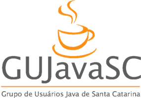

Exemplos palestra realizada no dia 20/07/2013 no GUJavaSC
Graduado em Sistemas de Informação e entusiasta do Java, trabalha como analista e desenvolvedor Android, atua na análise e gerenciamento de banco de dados no Unibave e como desenvolvedor Android home-office. Possui alguns aplicativos desenvolvidos comercialmente à empresas privadas e também aplicativo publicado na Play Store e Loja da Positivo.
Palestra 2: Dê Seus Primeiros Passos no Desenvolvimento com Android
Nesta palestra foram apresentados os seguintes tópicos: conceitos, estrutura do projeto, gerenciadores de layouts, interface gráfica e como publicar sua app.
Palestrante: Rodolfo Faquin Della Justina
Dia: 20/07/2013 (sábado) - às 09:00 horas.
Local: Auditório ACATE - Rua Lauro Linhares, 589 - Trindade - Florianópolis - SC
